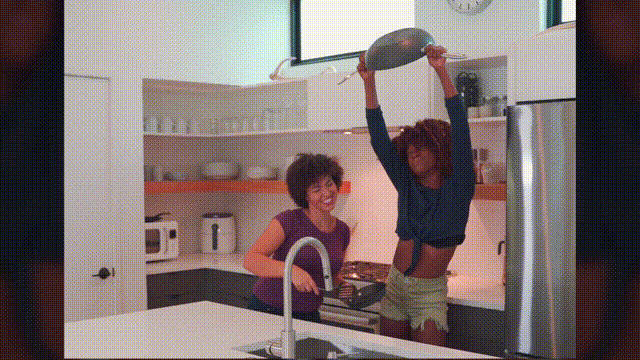

COCINA Y MÁS
REVISTA
| |
|
|
| |
|
|
| |
|
|
CONCEPTO DE COCINA
La palabra cocina puede ser utilizada para hacer referencia a tres diferentes elementos. En primer lugar, una de las acepciones más usadas es la que vincula al término con un área o espacio específico de la casa donde se preparan los alimentos y donde se lleva a cabo la acción de cocinar.
COCINA Y MÁS
ELEMENTOS BÁSICOS EN UNA COCINA
La cocina posee una cantidad de accesorios bastante permanentes y de alta importancia,
pero, sin duda alguna hay una serie de utensilios que no pueden faltar en ninguna cocina
por su mayor uso al momento de preparar los alimentos, unos pueden ser:
1. Buena iluminación: la iluminación adecuada es importante a la hora de cocinar.
2. Electrodomésticos de conveniencia y mayor uso al momento de cocinar: desde el microondas hasta la licuadora resultan fundamental.
3.Cuchillos bien afilados: es peligroso el uso de cuchillos en mal estado o mal
afilados, se debe tener dichos implementos adecuados a las diferentes tareas a realizar en la cocina.
4.Especias: ordenarlas de acuerdo a su mayor uso, para darle el toque especial a cada
comida que se va a realizar y así evitar invadir la cocina con especias por doquier.
5.Paños de cocina: su uso es importante a la hora de realizar distintos alimentos y
con el aseo del área de la cocina como secar rápido, no quemarse al tacto con los objetos
utilizados, colocar un plato caliente y hacer brillar la cristalería.
6.Tablas de madera: Perfecta para picar tus alimentos, desde los vegetales más sencillos,
hasta las piezas de pollo.
7.Sartén, ollas, bol y vasos: estos accesorios pueden ser realmente variados, y con diseños que
se amolden a la decoración de tus espacios.
8.Espátula y cubiertos: suelen ser perfectos aliados a la hora de cocinar.
Escurridores y colador.
9.Fuentes para el horno: también permite utilizarse en el microondas.

Ir a Google
CONCEPTOS BÁSICOS Y TRUCOS EN LA COCINA PARA PRINCIPIANTES
- Es posible que los más novatos en la cocina se encuentren con libros de recetas muy sencillas,
pero en las que se dan por hecho conceptos difíciles de llevar a cabo sin una explicación previa.
En primer lugar hay que distinguir entre los tres tipos de cocción más elementales:
-Hervir o cocer consiste en introducir un alimento en abundante líquido, ya sea agua, caldo, vino…
Hay que contar el tiempo de cocción desde que el agua está hirviendo.
También se puede hacer una cocción al vapor en un recipiente con orificios.
-Por su parte, la fritura es el método que cocina los alimentos en aceite,
teniendo en cuenta que el punto más aconsejable para freír es cuando el aceite empieza a humear.
Si no se utiliza mucha grasa se considera una cocción a la plancha.
-Por último, el asado puede realizarse al horno o en brasas, a altas temperaturas y con un tiempo de cocción lento.
-Saltear, pochar, reducir, rehogar, cortar en Juliana. Todos ellos son conceptos básicos de la
cocina pero que puede que suenan a “chino” a todo aquel que se mete entre fogones por primera vez. Conviene saber que:
-Saltear o sofreír consiste en cocinar con poco aceite y a fuego medio alto, removiendo bien. Suele ser muy habitual para hacer sofritos de ajo,
cebolla y zanahoria.
- Por su parte, pochar o rehogar tienen un significado muy similar y consiste en cocinar a fuego lento, dejando que el alimento vaya
tomando color poco a poco. Es una técnica muy utilizada, por ejemplo, para hacer que la cebolla suavice su sabor.
-En cuanto al corte de las verduras, hay que tener en cuenta que el estilo Juliana es aquel que corta en forma de tiras finas y largas.
Existen algunas recetas que implican una elaboración previa, como enharinar un alimento, rebozarlo o empanarlo. Para que salgan bien
a la primera hay que tener en cuenta algunos trucos, como que es importante no dejar reposar el alimento sobre la harina, ya que podría
impregnarse más del doble de lo necesario. Por su parte, en el rebozado el alimento se pasa, además de por harina, por huevo batido, mientras
que en el empanado hay un tercer paso que recubre el alimento de pan rallado. Para hacer más sofisticado este empanado se pueden añadir finas hierbas,
ajo en polvo o incluso frutos secos triturados.

Ir a Google
RECETA PARA PRINCIPIANTES
POLLO FRITO CRUJIENTE
INGREDIENTES PARA 4 PERSONAS:1kg de alitas de pollo
1 vaso de harina de trigo todo uso
2 vasos de pan rallado o molido
1 cucharadita de las especias que elijas (cayena o chile en polvo, pimienta negra molida, ajo y cebolla en polvo, paprika)
1 huevo y 200ml de leche
sal y pimienta
aceite para freir
COMO HACER EL POLLO FRITO CRUJIENTE:
1.- Cortamos las alitas del pollo. Con un cuchillo muy afilado las cortamos por la articulación.
La puntillita que no nos sirve, la retiramos. Nos sirve para hacer un caldo con ellas.
2.- Preparamos lo que será el rebozado exterior. Ponemos el huevo y la leche en un plato hondo y batimos ambos ingredientes
Hasta que quede una mezcla de color crema y sin grumos del huevo.
3.- En otro plato preparamos la otra parte del empanizado. Ponemos la harina, el pan rallado, las especias (puedes poner las que quieras
pero las sugeridas en el apartado de ingredientes, quedan muy muy bien) y mezclamos todos los ingredientes con las manos hasta que queden
todos homogéneamente mezclados
4.- Pasamos las alitas por la mezcla de harina pan rallado y especias, después por la mezcla del huevo y la leche y después nuevamente por la
mezcla de harina y pan rallado. Que quede bien embadurnado de estos ingredientes. Reservamos en un plato hasta haber terminado de empanar
todas las alitas.
5.- Una vez empanadas, metemos las alitas en la nevera durante una hora para que el empanado exterior se asiente bien.
6.- Finalmente, freímos las alitas en abundante aceite, durante unos 5 minutos. El aceite debe estar caliente, pero tampoco demasiado para
que las alitas se frían bien su interior sin que el empanizado exterior llegue a quemarse.
COMIDAS FÁCILES POR HACER
Estos Postres son Fáciles Almuerzo rápidos Desayunos para la Familia 

Ir a YouTubeIr a logoEnviar Mail (Correo Institucional)Enviar Mail (Correo Personal)Ir a página
-José Raúl Meza López

{kind=link}
{kind=link}
{kind=link}